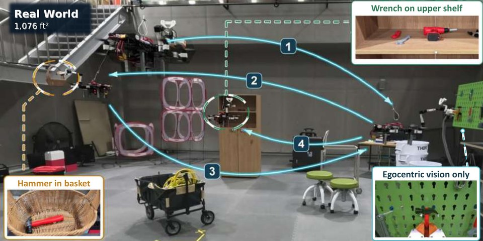

Embodied coding agents often fail on aerial manipulators because limited onboard sensing hides task outcomes and fragile physical interaction obscures why a program failed. We introduce Active Feedback, where the agent writes diagnostic programs that run in simulation to look from informative viewpoints (View) or test failure hypotheses through targeted interaction (Probe). Across six simulated tasks, this raises task success from 31.7% to 75%, and the refined programs run on a real aerial manipulator without source-code changes.
Project PagearXiv [TBD]